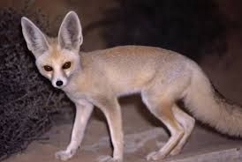
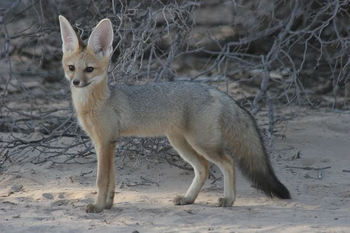
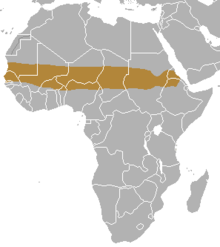
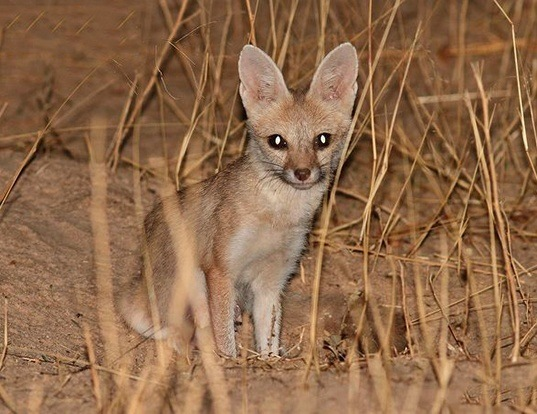
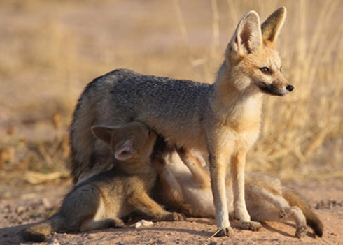

Description of the Pale Fox
Appearance
The pale fox(Vulpes pallida) is a small fox, with a long body and relatively short legs and an narrow muzzle. The fur is quite thin, with a pale sandy colour that turns white towards the abdomen. The back is often speckled with a blackish or a rufous colouration, with a darker mid-dorsal line. The flanks are paler than the dorsal pelage, blending into buffy-white underparts, and the legs are rufous. It has a pale face, an elongated muzzle with relatively long whiskers, and a dark ring surrounding the eye.
Its tail is long and bushy, with a reddish brown color with a prominent black tip and a dark patch above the tail gland. The skull is small with a relatively short maxillary region and small sharp canine teeth. The ears are large compared to other foxes but is typical of a desert inhabiting canid.
Habitat
Pale fox is distributed in the semi-arid Sahelian region of Africa bordering the Sahara Desert, from Mauritania and Senegal via Nigeria, Cameroon and Chad to the Red Sea. The southern border of its range extends to the savanna zones of northern Guinea. It is also present in Benin, Burkina Faso, Eritrea, Ethiopia, Gambia, Mali, Niger, South Sudan and Sudan. The habitat is sandy or stony arid terrain, and the pale fox is able to relocate southwards and northwards in relation to the periodic droughts that affect these regions.
The pale fox typically inhabits stony deserts and semi-deserts although it occasionally ventures south into the savanna. The pale foxes are primarily nocturnal. They are gregarious, living in shared burrows, probably in small family groups with parents and their young. During the day they rest in dug burrows that can extend up to 15 meters long and descend up to 2 meters to the ground, at dusk they venture out and forage for food, which includes plants and berries as well as rodents, reptiles and insects. It has the ability to retain water from its food, and can go almost completely without drinking.
Behaviour
The pale fox is one of the least studied of all canid species, in part due to its remote habitat and its sandy coat that blends in well with the desert-like terrain.
Although the abundance of the pale fox is unknown, it seems to be a common species throughout its wide range. No particular threats have been identified although this fox is sometimes hunted because it raids villages and takes poultry, and it is sometimes killed by vehicles at night. The International Union for Conservation of Nature has rated its conservation status as being of "least concern".